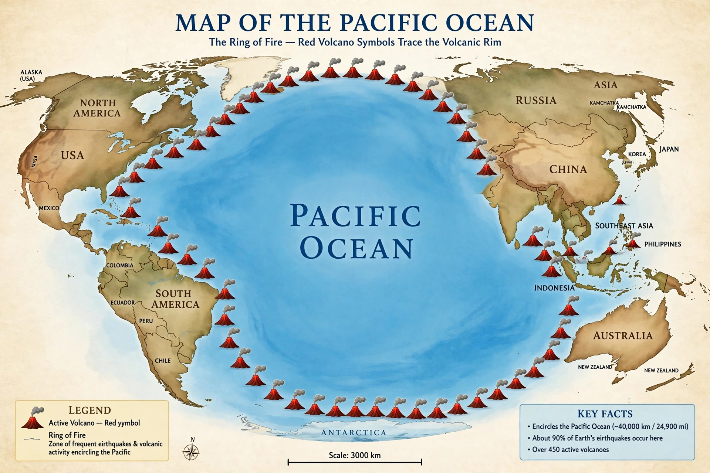

Ring of Fire

The Ring of Fire (also called the circum-Pacific belt) is the horseshoe-shaped zone of intense volcanic and earthquake activity that encircles the Pacific Ocean, following the boundaries where the Pacific Plate and neighbouring plates subduct beneath surrounding continents and island arcs.
It hosts the great majority of Earth's active volcanoes and nearly all of its largest earthquakes.
Extent and activity
The belt runs from New Zealand up through Indonesia, the Philippines and Japan, across the Aleutians, down the west coasts of North and South America. Roughly three-quarters of the world's active and dormant volcanoes and about 90 per cent of earthquakes — including almost all magnitude-8+ events — occur here, because the zone is a nearly continuous chain of subduction zones.
Famous eruptions include Mount St. Helens (1980), Pinatubo (1991) and Krakatoa (1883); great earthquakes include Chile 1960 (the largest ever recorded, magnitude about 9.5), Alaska 1964, Sumatra 2004 and Japan 2011.
Living with the ring
Hundreds of millions of people live within the belt, from Tokyo and Jakarta to Los Angeles, Mexico City and Santiago. Its hazards drive world-leading monitoring, building codes and tsunami warning systems; its volcanic soils, fisheries and geothermal resources are corresponding benefits. See {L('Volcano')} and {L('Seismology')}.
See also: Plate tectonics · Subduction · Volcano · Earthquake · Tsunami · Seismology